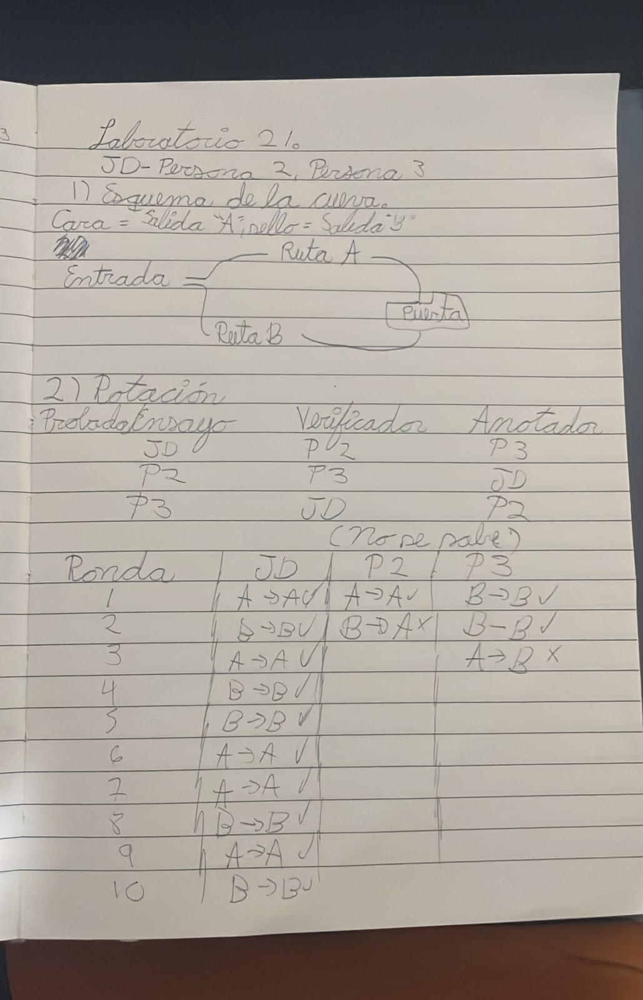
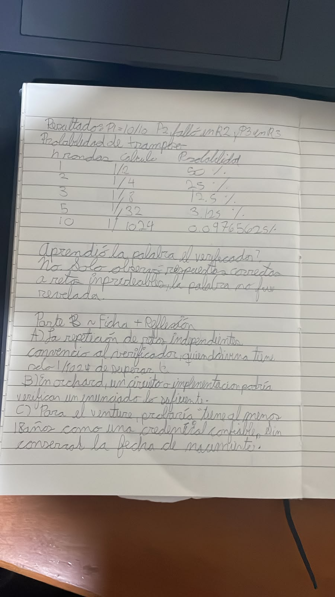

¿Qué convenció al verificador?
Los diez desafíos independientes respondidos correctamente por la Persona 1 hicieron improbable que el resultado se debiera al azar (1/1024 si no conociera el secreto); el verificador nunca necesitó oír la palabra.
Registro manuscrito de la cueva con monedas, la rotación de roles, los resultados observados, el cálculo de probabilidades y el análisis del caso Zcash Orchard.

Dibujo de la cueva, distribución de los roles entre los tres participantes y anotación de los resultados del experimento.
Evidencias/foto1.jpeg
Desarrollo del cálculo probabilístico, análisis manuscrito de Zcash Orchard y conclusiones del ejercicio.
Evidencias/foto2.jpegDe una moneda lanzada diez veces a las pruebas criptográficas que permiten verificar una transacción sin hacer públicos todos sus datos. Un estudio del protocolo de la cueva y su correspondencia conceptual con Zcash Orchard.
Una persona que desconoce el secreto tendría una probabilidad de apenas 1 en 1,024 de superar diez retos seguidos por azar.
Una prueba de conocimiento cero (zero-knowledge proof, ZKP) permite convencer a un verificador de que una afirmación es válida sin entregarle el dato secreto que la justifica. El experimento de la cueva analiza cómo la repetición de retos independientes reduce la probabilidad de responder correctamente por azar.
Afirmación: «Soy capaz de salir por el camino que el verificador indique». Secreto: la palabra que abre la puerta que conecta ambos lados de la cueva.
Si alguien conoce la palabra, puede cambiar de lado dentro de la cueva y cumplir cualquiera de los dos retos. Si no la conoce, debe adivinar con anticipación por qué lado saldrá. Por eso, superar una sola ronda no resulta convincente; superar muchas sí proporciona evidencia estadística.
Completitud: quien posee un testigo válido puede convencer a un verificador honesto.
Solidez: quien no posee ese testigo no debería poder generar convincentemente pruebas falsas, salvo con una probabilidad despreciable.
Conocimiento cero: la prueba no debe revelar más información sobre el secreto de la necesaria para validar la afirmación.
La garantía de estas propiedades depende de la definición formal del protocolo y de sus supuestos criptográficos.
El procedimiento usa una moneda como fuente de retos aleatorios. Cada participante rota por los papeles de probador, verificador y anotador, lo que permite observar el protocolo desde las tres perspectivas.
En el fondo existe una puerta entre ambos caminos. Solo quien conoce la palabra puede cruzarla cuando el reto lo exige.
| Ensayo | Probador | Verificador | Anotador | Condición asignada |
|---|---|---|---|---|
| 01 | Persona 1 | Persona 2 | Persona 3 | Conoce la palabra |
| 02 | Persona 2 | Persona 3 | Persona 1 | No conoce la palabra |
| 03 | Persona 3 | Persona 1 | Persona 2 | No conoce la palabra |
Intenta satisfacer el reto sin comunicar la palabra que abre la puerta.
Genera un reto independiente y comprueba si la respuesta coincide con lo pedido.
Documenta el número de ronda, el reto y el resultado, deteniéndose al primer fallo.
Cada integrante asumió el rol de probador en un turno distinto. Cada prueba concluyó al alcanzar diez respuestas correctas o al aparecer el primer error. La duración de cada ensayo quedó determinada por este criterio de terminación.
Conoce la palabra. Diez retos resueltos correctamente; protocolo completado.
Desconoce la palabra. Un acierto inicial y primer error en la segunda ronda.
Desconoce la palabra. Dos aciertos iniciales y primer error en la tercera ronda.
| Ensayo | Condición | Secuencia de rondas registradas | Resultado |
|---|---|---|---|
| Persona 1 | Conoce el secreto | 01 ✓02 ✓03 ✓04 ✓05 ✓06 ✓07 ✓08 ✓09 ✓10 ✓ | Completó10 aciertos · 0 fallos |
| Persona 2 | No conoce el secreto | 01 ✓02 ✕ | Fin en ronda 21 acierto · 1 fallo |
| Persona 3 | No conoce el secreto | 01 ✓02 ✓03 ✕ | Fin en ronda 32 aciertos · 1 fallo |
Una persona sin la palabra solo tiene una posibilidad entre dos de escoger de antemano el lado que el verificador exigirá. Si los retos se generan de forma independiente e impredecible, la probabilidad de acertarlos todos decrece exponencialmente.
Para diez rondas, (½)¹⁰ = 1/1024 = 0.0009765625 = 0.09765625 %. Una sucesión perfecta de diez aciertos sería rara para alguien que solo puede adivinar; no constituye una certeza absoluta de que conoce la palabra.
No. Únicamente pudo observar si el probador respondía correctamente a retos que no había elegido. Un participante honesto demostró capacidad de cumplirlos, sin revelar el contenido de la palabra secreta.
No con la misma fuerza. Una fotografía permite revisar la tabla y los cálculos, pero no demuestra por sí sola que los retos fueran independientes, que la moneda se lanzara después de la elección o que las anotaciones no se alteraran. La verificación directa requiere controlar el desafío; una prueba ZK digital utiliza mecanismos criptográficos para evitar depender de una simple transcripción.
Orchard es el protocolo de transacciones protegidas de Zcash introducido con la actualización NU5. Emplea el sistema de demostración Halo 2 para verificar reglas de gasto y creación de notas privadas, sin publicar sus detalles como datos ordinarios de la cadena. [Fuente técnica: ZIP 224]
| Aspecto analizado | Análisis del caso Zcash Orchard |
|---|---|
| 01. ¿Qué se prueba? | Que la acción protegida satisface las restricciones del circuito: el gasto corresponde a notas autorizadas, los valores respetan las reglas previstas y el estado transaccional es consistente. La prevención de doble gasto resulta de combinar las pruebas y autorizaciones con la verificación pública de nullifiers (anuladores), que no pueden repetirse en una cadena válida. |
| 02. ¿Qué dato permanece secreto? | El testigo de prueba contiene información privada asociada con las notas, claves y valores. En una transferencia protegida de Orchard no se exponen públicamente como campos legibles ordinarios las direcciones y montos de esas notas; se emplean compromisos y datos cifrados. La privacidad de la transacción no equivale a ocultar toda la actividad o los metadatos de red. |
| 03. ¿Quién prueba y quién verifica? | Probador: el software de billetera que elabora la transacción usando datos y claves bajo control del remitente. Verificador: los nodos que revisan la prueba y el resto de reglas de consenso, sin necesitar el contenido privado de cada nota. |
| 04. ¿Qué observa el verificador? | Observa una prueba criptográfica, compromisos de valor y notas, anuladores, firmas y otros campos públicos definidos en la transacción v5. Puede determinar si la operación cumple el protocolo y si un anulador ya apareció; no necesita conocer el monto individual ni la dirección protegida como dato visible en la cadena. ZIP 225: Transaction Format. |
| 05. Modalidad y configuración | Las pruebas que se verifican en cadena son no interactivas. Orchard utiliza Halo 2, un sistema zk-SNARK de estilo PLONKish; no utiliza STARK. Su diseño no exige una ceremonia inicial con secreto tóxico o trusted setup para generar parámetros de prueba en el sentido tradicional de algunos SNARK anteriores. Esto no elimina la necesidad de confiar en la corrección del código y los supuestos criptográficos. |
| 06. ¿Qué confianza queda? | Implementación: que los circuitos y sus verificadores implementen correctamente las reglas, sin errores que permitan autorizar valores inválidos. Custodia: que las claves del usuario no se filtren ni se pierdan. Consenso y metadatos: que los nodos hagan cumplir anuladores y firmas; una operación protegida no garantiza anonimato frente a vigilancia de red ni evita correlaciones fuera de cadena. |
| 07. Fuente principal | ZIP 224, Orchard Shielded Protocol (zips.z.cash/zip-0224). Complementan el análisis ZIP 225, Version 5 Transaction Format (zips.z.cash/zip-0225) y la documentación de NU5 (z.cash/upgrade/nu5). |
Si existe un error en el circuito o en su implementación, podría verificarse una afirmación diferente a la regla económica pretendida. Una prueba perfecta de una regla equivocada sigue siendo problemática.
Una billetera maliciosa, comprometida o defectuosa puede exponer secretos o producir operaciones no deseadas. La criptografía del protocolo no protege una clave ya robada.
Los nodos aún verifican campos públicos y reglas de consenso. Los extremos de la transacción, la infraestructura y los metadatos externos pueden introducir filtraciones fuera de la propiedad ZK.
| Aspecto | Cueva con moneda | Zcash Orchard |
|---|---|---|
| Secreto | Palabra de una puerta. | Testigos privados: claves, notas y datos de valor. |
| Reto | Moneda lanzada por una persona. | Relaciones y restricciones verificadas mediante el protocolo criptográfico. |
| Verificación | Observación presencial de una salida correcta. | Verificación algorítmica de una prueba y reglas de consenso. |
| Interacción | Interactiva: desafío-respuesta. | Prueba verificable en cadena sin interacción en tiempo real con el probador. |
| Límite principal | Una foto del registro no asegura autenticidad de los retos. | El resultado depende de que el circuito, el software y los supuestos técnicos sean correctos. |
La reflexión conecta el experimento, el punto de confianza que permanece en Zcash Orchard y una posible aplicación de las pruebas ZK a un producto digital.
Los diez desafíos independientes respondidos correctamente por la Persona 1 hicieron improbable que el resultado se debiera al azar (1/1024 si no conociera el secreto); el verificador nunca necesitó oír la palabra.
En la implementación del circuito: si verifica una condición incorrecta, una prueba criptográficamente válida podría respaldar una transacción inválida según las reglas que se pretendían aplicar.
En un servicio digital se podría verificar que una persona supera una edad mínima sin almacenar ni revelar su fecha de nacimiento; ello requeriría un emisor de confianza y un circuito apropiado.
Se distinguen los hechos registrados en el ejercicio de los elementos técnicos documentados en las especificaciones oficiales de Zcash.
El registro consolidado resume las anotaciones del equipo. Para contrastar el desarrollo de cada ensayo, deben consultarse las fotografías manuscritas del registro fotográfico inicial.